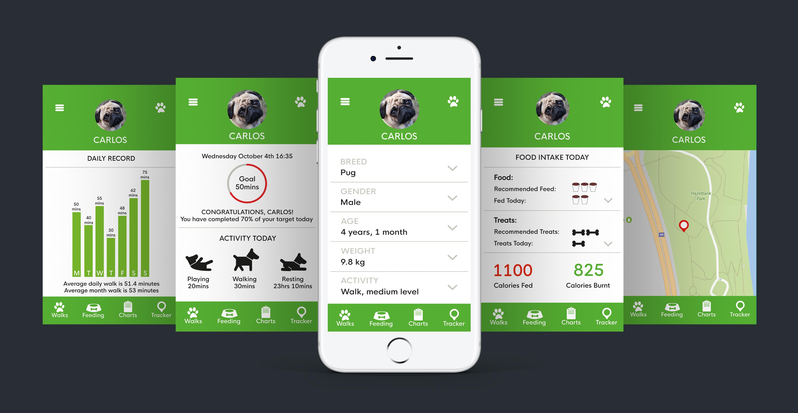

In a master class, given by Chris Murphy, we were instructed to develop a short, easy to consume micro publication. This task was to be completed in less than a week.
As dog owners, we know how much they love a walk, but we often don’t know if they are getting enough exercise or if they are being fed too much. Pet obesity is becoming a problem and leads to increased diseases and vet bills. I thought of a health app which would aid all age groups, be they young or old, to record their dog’s daily activities. I thought it would be helpful if people knew what their dog should be eating daily and a recommended amount of exercise. I started on paper and from there, the design grew. A device worn on the dogs collar will sync the relevant information to the app. I then moved to Illustrator where I designed several screens.
“Pawpaths, leading dogs in the right direction.” This is an activity device that can be attached to a dog’s collar, which measures your dog’s activities. It is an exercise guideline based on breed, age and weight and, when synced with the app, shows you various statistics, such as time spent resting, playing and walking, as well as calories eaten and burnt. An added feature is GPS tracking should your dog be off the lead and go out of sight or get lost. A map will pinpoint its location and hopefully it can be found. It is designed to be user friendly and targeted at all dog owners.
